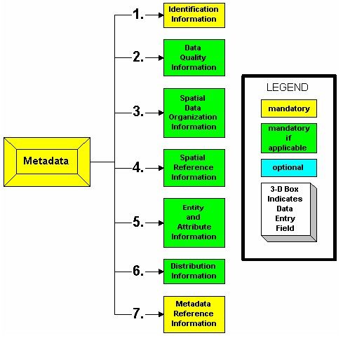
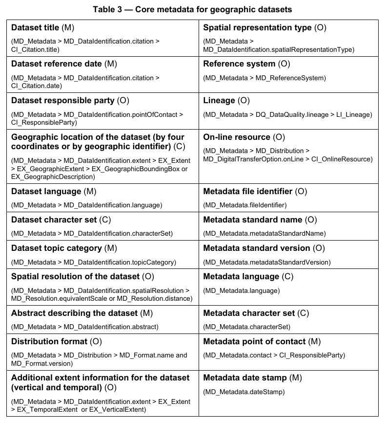

Metadata is often described as “data about data”, or the who, what, where, and when. In the spatial world, for each dataset we maintain, we should record information about the data such as:
Maintaining metadata for your datasets is important for several reasons:
With the growth of geographic information systems (GIS) in the 80’s and 90’s, geographic datasets became a requirement for decision makers across the world. The expansion of the Internet to share information through the late 90’s and 2000’s has now brought ‘discovery’ of geographic data into the hands of the average citizen.
Note
Metadata standards have been introduced since the mid-90’s with the goals of:
Example:
<head profile="http://dublincore.org">
..
<meta name="DC.Identifier" schema="DCterms:URI"
content="http://tutorialsonline.info/Common/DublinCore.html" />
<meta name="DC.Format" schema="DCterms:IMT" content="text/html" /> <meta name="DC.Title" xml:lang="EN" content="Dublin Core Tutorial" />
<meta name="DC.Creator" content="Alan Kelsey" />
<meta name="DC.Subject" xml:lang="EN" content="Dublin Core Meta Tags" />
<meta name="DC.Publisher" content="Alan Kelsey, Ltd." />
<meta name="DC.Publisher.Address" content="alan@tutorialsonline.info" />
<meta name="DC.Contributor" content="Alan Kelsey" />
<meta name="DC.Date" scheme="ISO8601" content="2007-01-06" />
<meta name="DC.Type" content="text/html" />
<meta name="DC.Description" xml:lang="EN"
content="Learning Advanced Web Design can be fun and easy! Look at a site designed specifically to help you learn how to design web pages with proper tags, styles, and scripting." />
<meta name="DC.Identifier" content="http://tutorialsonline.info/Common/DublinCore.html" />
<meta name="DC.Relation" content="TutorialOnline.info" scheme="IsPartOf" />
<meta name="DC.Coverage" content="Hennepin Technical College" />
<meta name="DC.Rights" content="Copyright 2011, Alan Kelsey, Ltd. All rights reserved." />
<meta name="DC.Date.X-MetadataLastModified" scheme="ISO8601" content="2007-01-06" />
<meta name="DC.Language" scheme="dcterms:RFC1766" content="EN" />
approved by the U.S. Federal Geographic Data Committee originally in 1994
composed of Sections, Compound Elements, Data Elements
International Standards Organization’s TC211 committee created this in 2003
consisting of more than 400 “Core”, “Mandatory”, and “Optional” elements
{kind=link}
{kind=link}